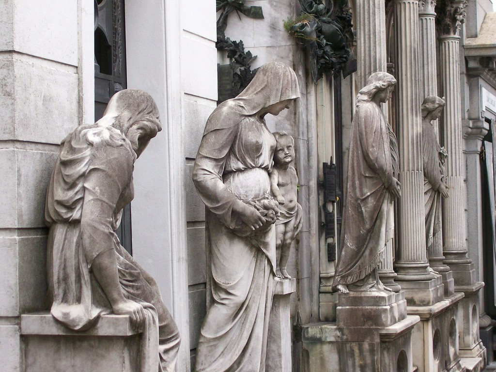

Кладбище Реколета, расположенное в одноименном районе города Буэнос-Айрес, является одним из известнейших кладбищ во всем мире. Это место упокоения богатых и знаменитых представителей высшего общества – первых лиц государства, известных деятелей культуры и искусства, видных ученых, нобелевских лауреатов.
Будучи самым старым аристократическим кладбищем столицы Аргентины, оно мало похоже на таковое в привычном понимании. Кладбище Реколета – это настоящий городок со своими улицами, проулками и перекрестками, множеством клумб и скамеечек. С той разницей, что здесь находятся склепы (их насчитывается свыше 6400) и часовни, не говоря уже о скульптурах невероятной красоты, поэтому нет ничего удивительного в том, что в этом месте бывает очень много туристов.
Кладбище Реколета дает возможность соприкоснуться со славным прошлым Аргентины – одного из крупнейших государств Латинской Америки и всего западного полушария. Каждый захороненный здесь человек олицетворяет частичку национальной истории, богатую на взлеты и падения, триумфы и поражения, но в тоже время очень чтимую аргентинцами. Этот «город мертвых» помогает иностранцам лучше понять и прочувствовать самобытную ментальность народа, его вековые традиции.
Кладбищу Реколета уже почти 200 лет. Отсчёт ведётся с начала XVIII века, когда сюда пришли искавшие пристанища монахи-францисканцы. Сначала они построили тут монастырь, а потом церковь Эль-Пилар, основав при ней кладбище. Представители этого католического ордена были известны своей обособленностью и закрытостью, вот местность и получила название «Recoleta», которое переводится с испанского как «уединенный» или «аскетичный».
В 1822 году поселение, выражаясь современным языком, было расформировано, и 17 ноября того же года губернатор Буэнос-Айреса Мартин Родригес и министр муниципального правительства Бернардино Ривадавий, впоследствии президент Аргентины, решили основать на бывших монастырских землях общественное кладбище. Автором проекта стал известный в то время французский инженер Просперо Кателин.
Кладбище Реколета – одна из самых известных и популярных достопримечательностей Буэнос-Айреса и всей Аргентины. Для посетителей оно открыто ежедневно с 7:00 до 18:00.
Добраться сюда можно на метро, ближайшая станция Metro Arenales Sa от центрального входа расположена примерно в километре. Сойдя с поезда, следует подняться вверх по авеню Callao в направлении улицы Junin.
Экскурсии (они платные) проводятся на испанском, английском и португальском языках. Услуги гида можно заказать сразу на месте. Каждый вторник и четверг в 11:00 на кладбище Реколета проводятся бесплатные экскурсии (только на английском).
После знакомства с этим удивительным и захватывающим местом можно провести время на прилегающей красивой площади с парком. Недалеко находится и рынок, где представлен широкий выбор сувениров. Если захотите задержаться в этом районе города подольше, то можете посетить близлежащий культурный центр или отдохнуть в одном из ресторанов неподалеку.
На кладбище Реколета разрешается фотографировать, поэтому не забудьте перед экскурсией зарядить свои фотокамеры или смартфоны.